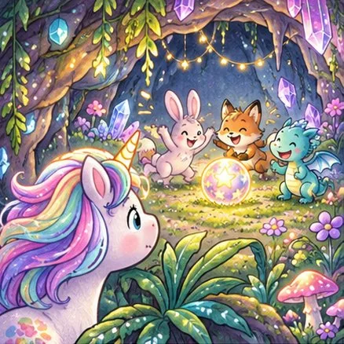
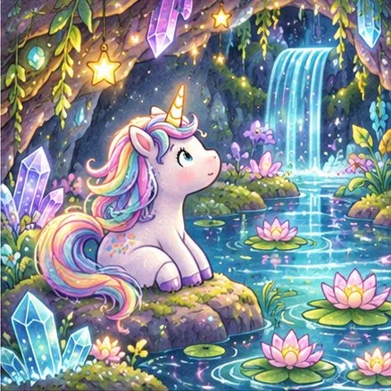
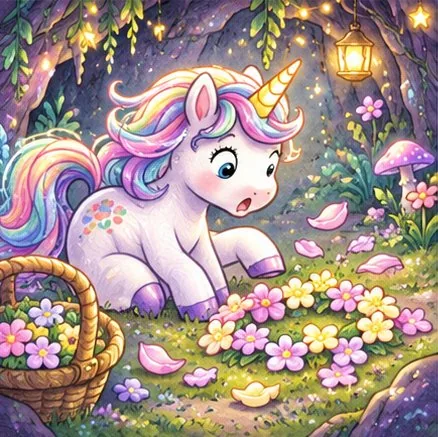
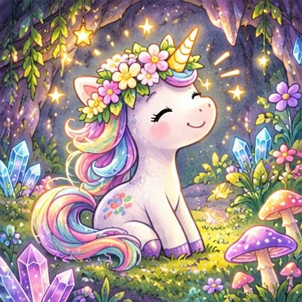

무지개 숲으로 가는 날
아침 햇살이 수정 동굴에 반짝반짝 들어왔어요. 아기 유니콘 루루가 꽃 이불 속에서 눈을 떴어요. “으아암! 오늘은 무지개 숲에 가는 날이야!” 루루의 무지개 갈기가 살랑살랑 흔들렸어요. 엄마가 갈기를 빗으며 말했어요. “오늘은 새로운 친구도 만날 수 있겠네.” “처음 보는 친구?” 루루의 귀가 쫑긋 섰어요. “조금 떨리지만 인사해 볼래!” 또각또각, 루루는 반짝이는 숲길을 걸었어요. 작은 버섯들이 노란 불빛을 켰고, 루루의 가슴도 콩닥콩닥 뛰었답니다.

저기서 무슨 놀이를 하지?
커다란 버섯 뒤에서 웃음소리가 들렸어요. “코코야, 받아!” “두두야, 네 차례!” 토끼 모모, 여우 코코, 아기 용 두두가 별공을 굴리고 있었어요. 공이 데굴데굴 굴러갈 때마다 작은 별들이 톡톡 튀었지요. 루루도 함께 뛰고 싶었어요. 하지만 세 친구는 벌써 아주 친해 보였어요. ‘나도 끼어도 될까?’ 루루는 잠깐 놀이를 지켜봤어요. 모모가 굴리면 코코가 받고, 두두가 다시 보내는 놀이였어요. ‘아하, 저렇게 노는구나!’ 루루는 숨을 고르고 한 걸음 다가갔어요.

안녕! 나도 같이 놀아도 돼?
“안녕!” 루루가 인사했지만 친구들은 공을 쫓느라 듣지 못했어요. 루루는 다시 말했어요. “안녕! 나는 루루야!” 모모가 돌아봤어요. “어? 안녕!” 루루는 활짝 웃었어요. “별공 놀이 재미있어 보여. 나도 같이 놀아도 돼?” 코코가 머뭇거렸어요. “우리는 지금 셋이서 놀고 있는데….” 두두도 말했어요. “네 명이서는 어떻게 놀지?” 코코가 덧붙였어요. “지금은 우리끼리 조금 더 놀고 싶어.” 루루의 웃음이 작아졌어요. 그래도 고개를 끄덕였어요. “알겠어. 나는 저쪽에서 놀게.” 돌아서는 루루의 마음이 콕 아팠어요.

속상한 마음도 괜찮아
루루는 버섯 아래에 앉았어요. 귀도 꼬리도 축 내려갔지요. “나도 같이 놀고 싶었는데….” ‘내가 재미없는 유니콘이라서 그런 걸까?’ 눈물이 살짝 맺혔어요. 그때 나비 한 마리가 코끝에 앉았다가 날아갔어요. 루루는 숨을 고르며 친구들의 말을 떠올렸어요. ‘네 명이서는 어떻게 놀지?’ 친구들이 루루를 싫어한다기보다 아직 함께 놀 방법을 모르는 걸 수도 있어요. 루루는 눈물을 쓱 닦았어요. “속상해도 괜찮아. 지금 함께 놀지 않아도 나는 소중한 루루야.” 그리고 주위를 둘러봤어요. “그럼 나는 뭘 하고 놀까?”

꽃 왕관을 만들어 볼까?
바람이 불자 분홍색, 노란색, 하늘색 꽃잎들이 빙글빙글 춤췄어요. 루루의 눈이 반짝였어요. “꽃 왕관을 만들어 볼래!” 루루는 떨어진 꽃잎을 주워 풀잎 위에 올렸어요. “이건 분홍 별꽃, 이건 노란 달꽃!” 그런데 꽃잎이 툭 떨어졌어요. 다시 올려도 툭, 툭! “아이참, 왜 자꾸 떨어지지?” 루루는 입술을 삐죽 내밀었어요. 잠깐 그만두고 싶었지만 예쁜 왕관이 떠올랐어요. “아직 안 된 것뿐이야. 다른 방법을 찾아보자!” 그때 길고 부드러운 풀잎이 눈에 들어왔어요.

한 번 더, 천천히!
루루는 긴 풀잎을 동그랗게 말고 꽃잎을 끼웠어요. “하나, 둘, 셋!” 이번에는 떨어지지 않았어요. “와, 된다!” 하지만 마지막 꽃을 끼우자 왕관이 와르르 무너졌어요. “으앙! 거의 다 했는데!” 루루는 정말 속상했어요. 그래서 호숫가에서 물을 마시며 잠깐 쉬었어요. 다시 돌아온 루루가 말했어요. “이번에는 풀잎을 두 번 꼬아 볼래.” 빙글빙글, 살살, 천천히. 마침내 왕관이 완성됐어요! “야호, 성공이다!” 루루는 꽃 왕관을 머리에 얹고 활짝 웃었어요. 쉬었다가 다시 해도 괜찮았어요.

모모가 말을 걸었어요
“우와! 그거 뭐야?” 토끼 모모가 다가왔어요. “네가 만든 거야?” “응! 처음에는 자꾸 무너졌는데 풀잎을 두 번 꼬았더니 됐어!” 모모의 눈이 반짝였어요. “나도 만들어 보고 싶어.” 루루가 웃었어요. “그럼 같이 만들래?” “좋아!” 루루는 꽃잎을 건넸어요. “네가 좋아하는 색을 골라 봐.” 모모는 분홍 꽃을 골랐어요. 하지만 모모의 풀잎도 자꾸 풀어졌어요. “어떡하지?” “여기를 한 번 더 꼬아 볼래?” 모모가 따라 하자 왕관이 동그랗게 만들어졌어요. “우와, 됐다!” 둘은 마주 보고 깔깔 웃었어요.

서로 좋아하는 걸 알아가요
“모모야, 넌 어떤 놀이가 좋아?” 루루가 물었어요. “별공 굴리기! 숨바꼭질도 좋아해.” “정말? 나도 숨바꼭질 좋아해!” 모모가 웃었어요. “그럼 다음에 같이 하자!” 조금 뒤 모모가 말했어요. “루루야, 아까는 우리가 별공 놀이에 너무 신나 있었어.” 루루는 솔직하게 대답했어요. “응, 조금 속상했어.” 모모가 조용히 듣자 루루가 덧붙였어요. “그래도 지금 너랑 이야기하고 꽃 왕관을 만드니까 재미있어!” “나도!” 처음부터 금세 친해지지 않아도 괜찮았어요. 인사하고 좋아하는 것을 물으며 조금씩 알아가면 되니까요.

친구마다 잘하는 게 달라요
“모모야, 뭐 해?” 코코와 두두가 다가왔어요. “우와, 꽃 왕관이다! 우리도 만들어 볼래.” “좋아!” 코코는 노란 꽃을, 두두는 파란 꽃을 골랐어요. 그런데 두두의 발톱에 꽃잎이 걸려 찢어졌어요. “앗, 망가졌어!” 루루가 옆에 앉았어요. “괜찮아. 나도 여러 번 실패했어. 이 튼튼한 꽃잎으로 다시 해보자.” 코코는 풀잎을 잘 묶고, 모모는 색을 예쁘게 골랐어요. 두두는 별 모양 꽃을 찾아왔지요. 마침내 네 친구 모두 왕관을 썼어요. “우와! 모두 다르게 예뻐!”

네 명이서 하는 새로운 놀이
두두가 별공을 가져왔어요. “이제 공놀이도 할까?” 코코가 말했어요. “그런데 이번에는 네 명이네.” 루루가 손을 들었어요. “동그랗게 서서 서로 굴리면 어때?” 모모가 손뼉을 쳤어요. “좋아! 받을 때 이름을 말하자!” “나는 모모!” 데굴데굴. “나는 코코!” 반짝반짝. “나는 두두!” 공이 루루에게 왔어요. “나는 루루!” 별빛이 하늘로 솟았어요. 루루가 공을 놓치자 코코가 말했어요. “괜찮아, 다시 해보자!” 모두 함께 공을 찾아왔어요. 네 친구가 새 규칙을 만들자 함께 노는 일이 즐거워졌답니다.

이번에는 루루가 손을 내밀어요
한참 놀 때 나무 뒤에서 작은 목소리가 들렸어요. “저기….” 고슴도치 밤비가 친구들을 바라보고 있었어요. 눈이 마주치자 밤비는 고개를 숙였어요. 루루는 아까 자신이 떨렸던 순간을 떠올렸어요. “안녕, 나는 루루야. 너는?” “나… 밤비야.” “우리 별공 놀이 중이야. 같이 해볼래?” 밤비가 망설였어요. “아직 잘 모르겠어.” 루루가 웃었어요. “괜찮아. 여기서 구경해도 돼.” 잠시 뒤 밤비가 다가왔어요. “나도 해볼래.” “좋아! 천천히 굴려줄게.” 데굴데굴. 밤비가 공을 받았어요. “와, 내가 받았다!” 친구들이 박수쳤어요. 루루의 마음도 따뜻해졌어요.

루루의 마음에 생긴 별
노을이 내려앉자 루루가 인사했어요. “얘들아, 다음에 또 놀자!” 집에 돌아온 루루는 엄마 품에 폭 안겼어요. “엄마! 새 친구들이 생겼어. 그런데 처음에는 같이 놀지 못했어.” “속상했겠구나.” “응. 그래도 꽃 왕관을 만들고, 실패해도 다시 해봤어!” 엄마가 다정하게 말했어요. “친구가 바로 함께 놀아주지 않아도 루루가 덜 소중해지는 건 아니란다. 친구에게도 자기 마음이 있으니까.” “맞아! 밤비가 망설일 때 나도 기다려 줬어.” 엄마는 루루를 꼭 안았어요. 그날 밤 루루는 속삭였어요. “처음이라 떨려도 괜찮아. 잘 안되면 쉬었다가 다시 해보면 돼. 나는 언제나 소중한 루루니까!” 창밖에 용기의 별이 반짝였답니다.
🌈 루아와 함께 나누는 마음 이야기
“루루는 친구들이 처음에 같이 놀지 않겠다고 했을 때 어떤 마음이었을까?”
“루아라면 어떤 놀이를 먼저 해 보고 싶어?”
친구가 당장 함께 놀지 않아도 괜찮아요. 내 마음도 친구 마음도 소중해요. 잠시 혼자 놀거나 다른 친구를 찾아도 좋아요. 씩씩함은 속상하지 않은 것이 아니라, 속상한 마음을 돌보며 새로운 방법을 찾아보는 거예요.